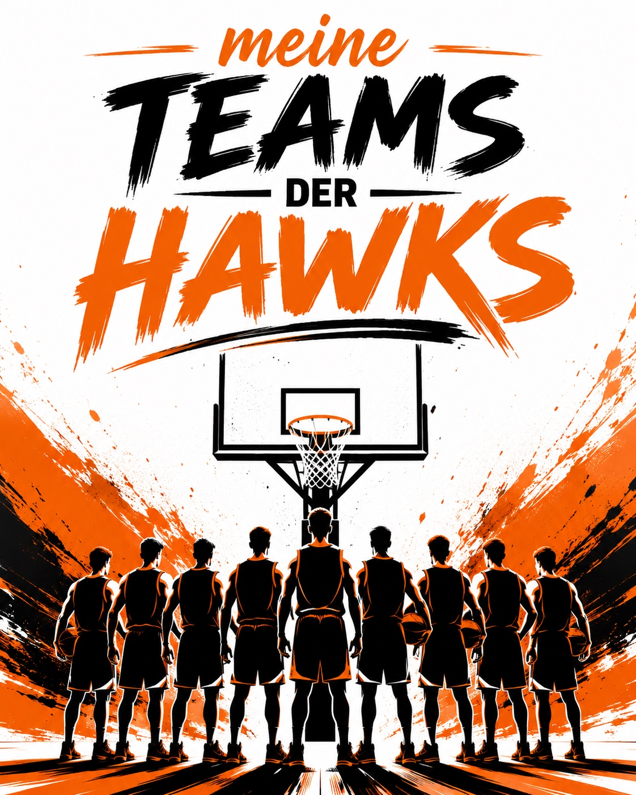

<!-- Direkt nach der bestehenden Kachel „Teams“ in <section class="dashboard"> einfügen -->
<button class="module-card image-card teams-card" id="myTeamsCard" data-module="myTeams" hidden>
  
  <span class="card-copy">
    <strong>Meine Teams der Hawks</strong>
    <small>Mannschaft A &amp; U18</small>
  </span>
</button>
